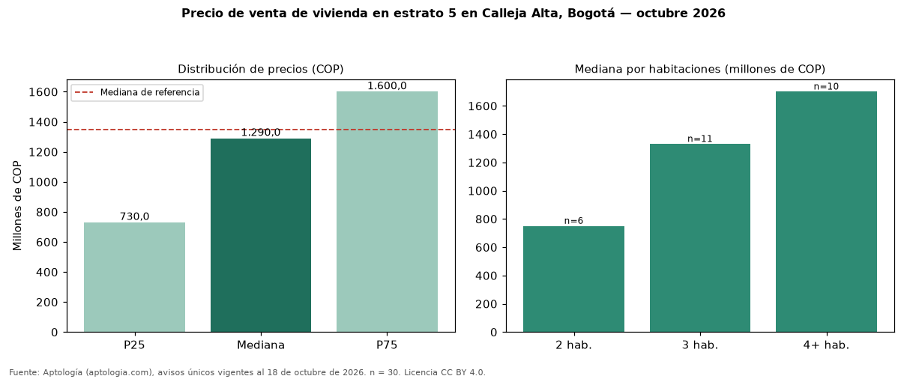

Precio de venta de vivienda en estrato 5 en Calleja Alta, Bogotá — octubre 2026
Con 30 avisos únicos, el precio mediano de vivienda en estrato 5 en venta en Calleja Alta, Bogotá es COP 1,29 mil millones. Eso es 4 % menos que la mediana de toda la oferta de venta en Calleja Alta (COP 1,35 mil millones). Por metro cuadrado, la mediana es COP 6.694.565/m² (−7 % frente a COP 7.202.703/m²). El rango intercuartílico va de COP 730 millones a COP 1,60 mil millones (razón 2,2). Por habitaciones: 2 habitaciones, COP 750 millones (n = 6); 3 habitaciones, COP 1,33 mil millones (n = 11); 4 o más habitaciones, COP 1,70 mil millones (n = 10). El área mediana es 200 m² (referencia: 202 m²). El 100 % de los avisos tiene al menos un parqueadero. Datos abiertos CC BY 4.0 de Aptología; fuente y búsqueda de inmuebles: https://www.aptologia.com/estrato-de/bogota/calleja-alta. Archivos: PDF de 2 páginas, CSV con las cifras y gráfica PNG.

| Avisos únicos | 30 |
|---|---|
| Percentil 25 | COP 730.000.000 |
| Mediana | COP 1.290.000.000 |
| Percentil 75 | COP 1.600.000.000 |
| Mediana por m² | COP 6.694.565 |
Fuente: avisos vigentes de portales inmobiliarios recopilados por Aptología, deduplicados (mínimo 30 avisos únicos por celda). Precios pedidos, no cerrados. Fecha: 2026-10-18.